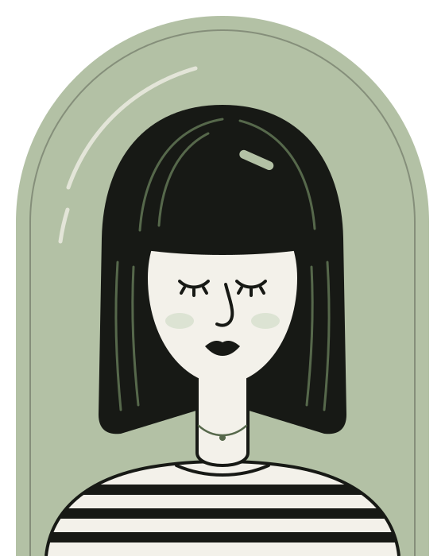
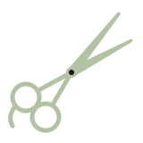
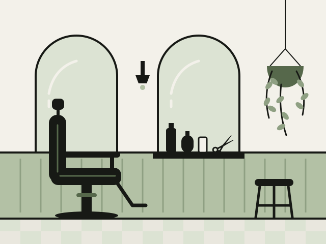
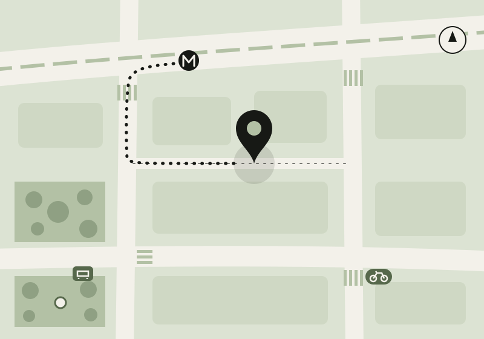

Coiffeur mixte & barbier · Paris 18e
Des coupes qui tombent juste.


Au fond du passage du Croquis, Inès, Malik et Jo coupent, colorent et taillent les barbes du quartier depuis 2019. On vous écoute, on vous conseille franchement, et le samedi, c’est sans rendez-vous.
- 4,9/5sur 212 avis clients
- Samedisans rendez-vous, 9 h–18 h
- Frangeretouchée gratuitement entre deux coupes
- Coupe femme

- Coupe homme
- Barbe & rasage
- Couleur & balayage
- Coupe enfant
- Samedi sans rendez-vous

Le salon
Quatre fauteuils, un bac massant et pas de chichis.
Frange, c’est une ancienne mercerie de 60 m² au fond d’un passage pavé, entre un relieur et un atelier de céramique. On y coupe les cheveux de tout le monde : raides, frisés, crépus, fins, blancs, ceux des enfants qui ont peur des ciseaux et les barbes qui méritent une deuxième chance.
Chaque coupe commence par dix minutes de conversation, cheveux secs. Le prix est annoncé avant de commencer, et il ne bouge pas.
- 2019
- ouverture du salon dans le passage
- 4 + 1
- fauteuils, dont un de barbier
- 15 min
- de diagnostic offert avant une couleur
« On coupe comme on écoute : longtemps, et sans jamais juger. »
Prestations
Ce qu’on fait, et combien ça coûte.
Prix TTC, affichés avant de commencer, shampoing et coiffage compris. Pour une couleur, on commence toujours par un diagnostic gratuit de quinze minutes.
Tous les tarifs et durées- 01Coupe femmedès 52 €Shampoing, coupe et brushing · 45 min à 1 h 30
- 02Coupe hommedès 32 €Aux ciseaux ou à la tondeuse, dégradés nets · 30 à 45 min
- 03Couleur & balayagedès 28 €Couleurs végétales ou classiques, balayages, patines · 30 min à 2 h 30
- 04Barbe & rasagedès 18 €Taille, contours au rasoir, serviette chaude · 15 à 35 min
- 05Coupe enfantdès 18 €Jusqu’à 12 ans, avec un vrai miroir et un vrai tablier · 20 à 30 min
Le samedi, de 9 h à 18 h
Pas de rendez-vous ? Poussez la porte.
Le samedi, le salon fonctionne sans rendez-vous, comme chez le barbier d’autrefois. Vous prenez un ticket à l’entrée, on vous sert un café, un thé ou un sirop de menthe, et on vous appelle par votre numéro. Les couleurs et les balayages restent sur rendez-vous, en semaine.
Le plus calme : avant 10 h et après 16 h.
Horaires et accèsAttente
du samedi
n°07
- Avant 10 h
- env. 10 min
- De 10 h à 13 h
- 30 à 45 min
- De 13 h à 16 h
- env. 25 min
- Après 16 h
- env. 15 min
Temps d’attente moyens, relevés au fil des samedis.
Ils en parlent
Ce que disent les habitués.
4,9sur 5, d’après 212 avis
laissés depuis 2019
« Inès a compris en dix minutes ce que trois salons n’avaient pas compris en dix ans : mes boucles. Ma coupe tient enfin toute seule. »
Awa D.cliente depuis 2021
« Le rasage à la serviette chaude du samedi matin est devenu mon petit rituel. Malik ne force jamais sur le dégradé. »
Thomas L.habitué du samedi
« Ma fille de six ans a eu droit à un vrai miroir, un vrai tablier et un vrai compliment. Elle demande quand on y retourne. »
Sophie M.maman de Lou, 6 ans
Nous trouver
Au fond du passage.
8 passage du Croquis75018 Paris
Le passage relie la rue Chantemerle à la rue de la Mire. Cherchez la porte vert sauge et l’enseigne en forme de ciseaux, à mi-chemin.
| Mardi – vendredi | 10 h – 19 h |
|---|---|
| Samedi sans rendez-vous | 9 h – 18 h |
| Dimanche et lundi | Fermé |

Envie de changement ?
On vous garde un fauteuil cette semaine.
Réservez en ligne en deux minutes, appelez-nous aux heures d’ouverture, ou passez samedi sans prévenir.